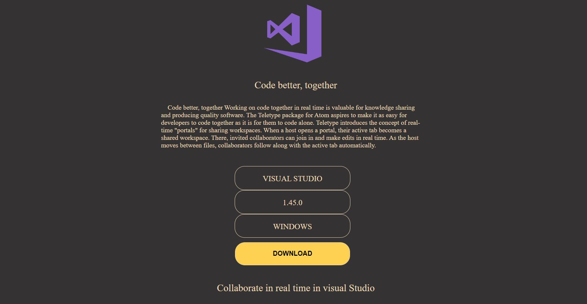

Share a portal Click the icon in the Atom status bar, and flip the switch to start sharing a portal to your workspace. Then invite people to join your portal by sending them your portal URL.
A lot has changed in the technology industry in the last five years. From major developments in Artificial Intelligence to robust smart devices, many new programming languages have been introduced for the development of modern technology. As per the recent stats, the development industry is falling short of developers and programmers.

this is estimated that by the year 2020 the technology industry will fall short of nearly 1 million developers. The world calls for efficient programmers who can write a seamless amount of clean and optimized code in the given time-frame. For writing optimized and error-free code, it is very necessary for a programmer to choose among the best code editors.